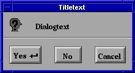

Kit zum Erstellen von Dialogen.
|
MessageDialog error(CharString title, Glyph message)
|
|
Fehlerdialog mit OK, CANCEL und HELP Buttons.
|
|
MessageDialog information(CharString title, Glyph message)
|
|
Informationsdialog mit OK und HELP Buttons.
|
|
MessageDialog question(CharString title, Glyph message)
|
|
Fragedialog mit YES, NO, CANCEL und HELP Buttons.
|
|
MessageDialog warning(CharString title, Glyph message)
|
|
Warnungsdialog mit OK, CANCEL und HELP Buttons.
|
|
MessageDialog working(CharString title, Glyph message)
|
|
Ein Arbeitsmeldungsdialog mit STOP Button.
|
ChooserDialog file_chooser(string initial_directory)
ChooserDialog name_chooser(CosNaming::NamingContext initial_context)
|
|
Gibt einen Auswahldialog für Dateien oder Namen zurück.
|
|
PromptDialog prompt(CharString title, Glyph message, FieldSubject subj)
|
Besitzt OK, APPLY, RESET, CANCEL und HELP Buttons.
subj darf nil sein.
|
Beispiel:

// see how easy it is to create a simple message box ;)
void someAction()
{
FigureKit *figurekit = KitFactory::instance()->figures();
DialogKit *dialogkit = KitFactory::instance()->dialogs();
MessageDialog_var dlg = dialogkit->question(
CharString_var(FrescoLib::string_ref(
"Titletext"
)),
Glyph_var(figurekit->label(
FigureStyle_var(figurekit->default_style()),
CharString_var(FrescoLib::string_ref(
"Dialogtext"
))
))
);
dlg->hide_choice(MessageDialog::help);
dlg->post_modal(
Window_var(
Screen_var(
Display_var(
FrescoLib::current_context()->display_ptr()
)->default_screen()
)->top_level(
Viewer_var(new BgViewer()),
mainwindow // global Window_var for the application window
)
)
);
}